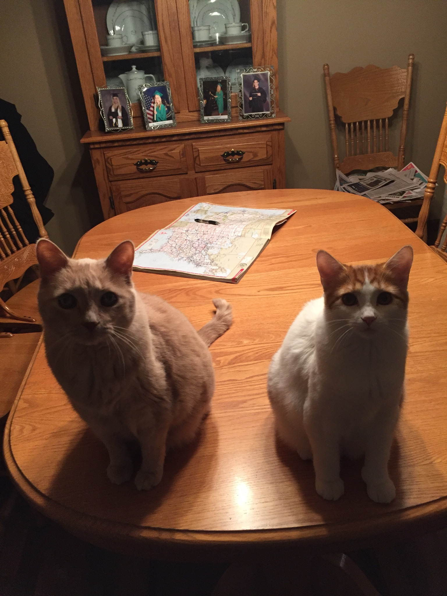

I am a 23 year old senior level Computer Science student at Grand Valley State University.
I am interested in software development and full-stack web development.
I currently live in Grand Rapids

Java, C/++, CSS, HTML, Javascript, Python, SQL, UNIX, JQuery
notable projects:
Test4Time HEALTH - Android app developed for test4time
Java, SSL encryption, Android, Fitbit API
Usecase generator - assists in creation and exportation of usecases
Java, XML, Swing
Hearthstone Database - Python script that converts Json to SQL to create a database of cards
Json, SQL, Python
Vector Processor - Performs subtraction on two streams of binary numbers
C
This website (currently foxes.github.io)
Jquery, CSS, HTML, Three.JS